Note
Click here to download the full example code
IMU Integrator Tutorial¶
import os
import torch
import argparse
import numpy as np
import pypose as pp
from datetime import datetime
import torch.utils.data as Data
import matplotlib.pyplot as plt
from matplotlib.patches import Ellipse
from matplotlib.collections import PatchCollection
from imu_dataset import KITTI_IMU, imu_collate, move_to
Preparation¶
def plot_gaussian(ax, means, covs, color=None, sigma=3):
''' Set specific color to show edges, otherwise same with facecolor.'''
ellipses = []
for i in range(len(means)):
eigvals, eigvecs = np.linalg.eig(covs[i])
axis = np.sqrt(eigvals) * sigma
slope = eigvecs[1][0] / eigvecs[1][1]
angle = 180.0 * np.arctan(slope) / np.pi
ellipses.append(Ellipse(means[i, 0:2], axis[0], axis[1], angle=angle))
ax.add_collection(PatchCollection(ellipses, edgecolors=color, linewidth=1))
Define Parameters
parser = argparse.ArgumentParser(description='IMU Preintegration')
parser.add_argument("--device", type=str, default='cpu', help="cuda or cpu")
parser.add_argument("--integrating-step", type=int, default=1, help="number of integrated steps")
parser.add_argument("--batch-size", type=int, default=1, help="batch size, only support 1 now")
parser.add_argument("--step-size", type=int, default=2, help="the size of the integration for one interval")
parser.add_argument("--save", type=str, default='../dataset/save/', help="location of png files to save")
parser.add_argument("--dataroot", type=str, default='../dataset/', help="dataset location downloaded")
parser.add_argument("--dataname", type=str, default='2011_09_26', help="dataset name")
parser.add_argument("--datadrive", nargs='+', type=str, default=["0001","0002","0005","0009","0011",
"0013","0014","0015","0017","0018","0019","0020","0022","0005"], help="data sequences")
parser.add_argument('--plot3d', dest='plot3d', action='store_true', help="plot in 3D space, default: False")
parser.set_defaults(plot3d=False)
args = parser.parse_args(); print(args)
os.makedirs(os.path.join(args.save), exist_ok=True)
torch.set_default_tensor_type(torch.DoubleTensor)
for drive in args.datadrive:
dataset = KITTI_IMU(args.dataroot, args.dataname, drive, duration=args.step_size, step_size=args.step_size, mode='evaluate')
loader = Data.DataLoader(dataset=dataset, batch_size=args.batch_size, collate_fn=imu_collate, shuffle=False)
init = dataset.get_init_value()
integrator = pp.module.IMUPreintegrator(init['pos'], init['rot'], init['vel'], reset=False).to(args.device)
poses, poses_gt = [init['pos']], [init['pos']]
covs = [torch.zeros(9, 9)]
for idx, data in enumerate(loader):
data = move_to(data, args.device)
state = integrator(dt=data['dt'], gyro=data['gyro'], acc=data['acc'], rot=data['init_rot'])
poses_gt.append(data['gt_pos'][..., -1, :].cpu())
poses.append(state['pos'][..., -1, :].cpu())
covs.append(state['cov'][..., -1, :, :].cpu())
poses = torch.cat(poses).numpy()
poses_gt = torch.cat(poses_gt).numpy()
covs = torch.stack(covs, dim = 0).numpy()
plt.figure(figsize=(5, 5))
if args.plot3d:
ax = plt.axes(projection='3d')
ax.plot3D(poses[:,0], poses[:,1], poses[:,2], 'b')
ax.plot3D(poses_gt[:,0], poses_gt[:,1], poses_gt[:,2], 'r')
else:
ax = plt.axes()
ax.plot(poses[:,0], poses[:,1], 'b')
ax.plot(poses_gt[:,0], poses_gt[:,1], 'r')
plot_gaussian(ax, poses[:, 0:2], covs[:, 6:8,6:8])
plt.title("PyPose IMU Integrator")
plt.legend(["PyPose", "Ground Truth"])
figure = os.path.join(args.save, args.dataname+'_'+drive+'.png')
plt.savefig(figure)
print("Saved to", figure)
- 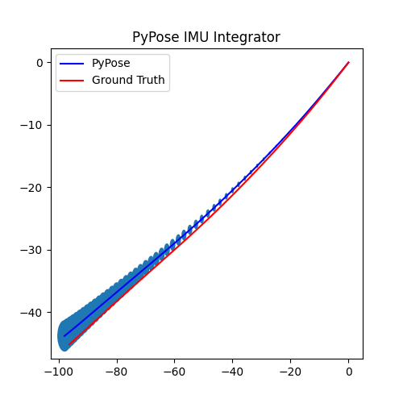
- 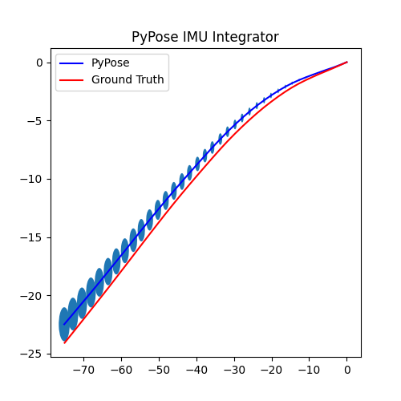
- 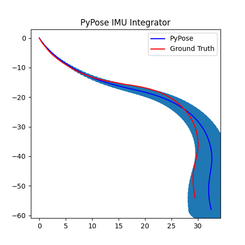
- 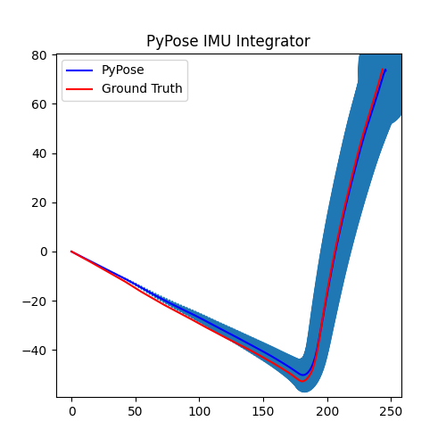
- 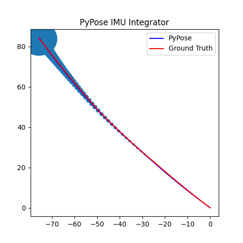
- 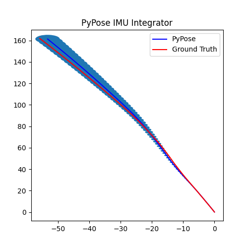
- 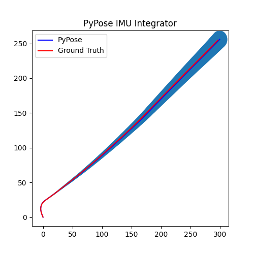
- 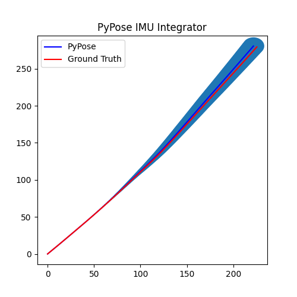
- 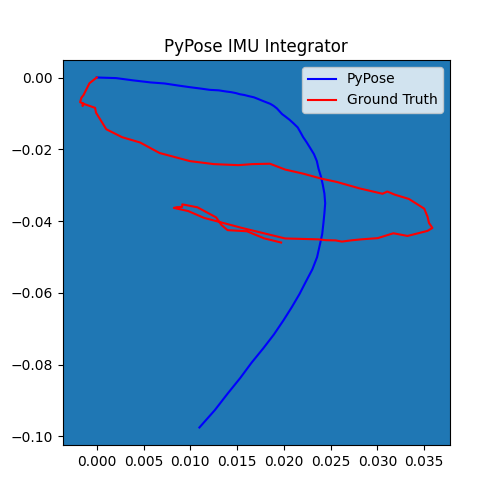
- 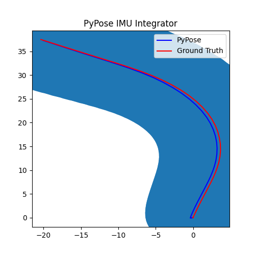
- 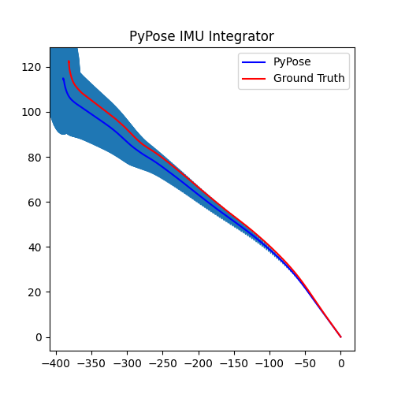
- 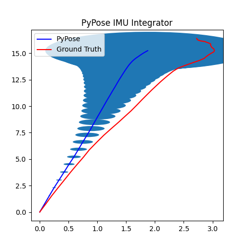
- 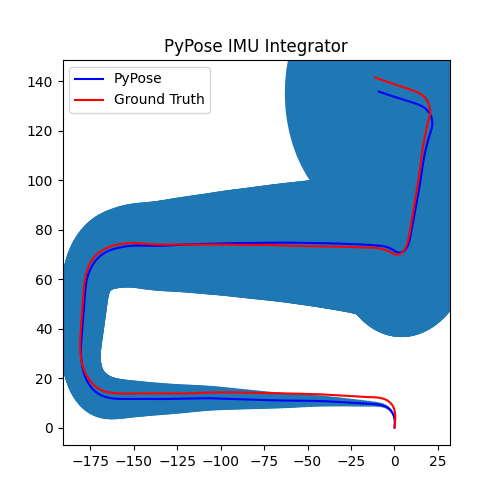
Namespace(device='cpu', integrating_step=1, batch_size=1, step_size=2, save='../dataset/save/', dataroot='../dataset/', dataname='2011_09_26', datadrive=['0001', '0002', '0005', '0009', '0011', '0013', '0014', '0015', '0017', '0018', '0019', '0020', '0022', '0005'], plot3d=False)
Saved to ../dataset/save/2011_09_26_0001.png
Saved to ../dataset/save/2011_09_26_0002.png
Saved to ../dataset/save/2011_09_26_0005.png
Saved to ../dataset/save/2011_09_26_0009.png
Saved to ../dataset/save/2011_09_26_0011.png
Saved to ../dataset/save/2011_09_26_0013.png
Saved to ../dataset/save/2011_09_26_0014.png
Saved to ../dataset/save/2011_09_26_0015.png
Saved to ../dataset/save/2011_09_26_0017.png
Saved to ../dataset/save/2011_09_26_0018.png
Saved to ../dataset/save/2011_09_26_0019.png
Saved to ../dataset/save/2011_09_26_0020.png
Saved to ../dataset/save/2011_09_26_0022.png
Saved to ../dataset/save/2011_09_26_0005.png
Total running time of the script: ( 0 minutes 4.224 seconds)